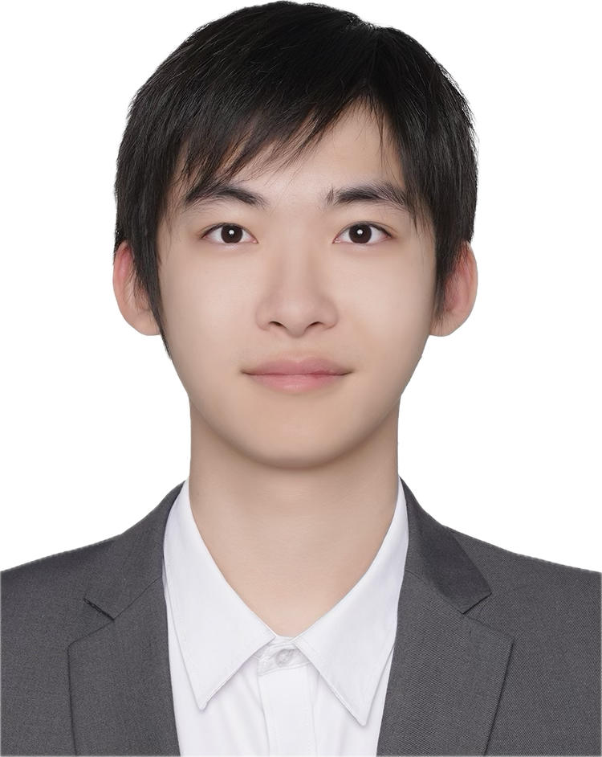

建模与工程表达
SolidWorks、Creo、AutoCAD
机械结构建模、工程图绘制
KeyShot 模型渲染
LI YUFU
智能制造 · 机械结构设计
从机构设计、仿真分析到样机验证，
关注机械结构如何将想法转化为可实现的工程方案。

三项工程实践，涵盖机构设计、仿真优化与样机开发。
点击项目，展开工作内容与成果。
扑动机构设计 · 轻量化优化 · 飞行验证
通过高速摄像分析蝴蝶运动特征，建立运动方程。设计双曲柄摇杆扑动机构，并使用 SolidWorks 完成飞行器主体结构设计。
采用 3D 打印加工非标件，测试 PLA、ABS 与尼龙材料。结合样机试验与 Ansys 应力分析优化结构，整机减重 43%，满足 5 m 坠落冲击强度要求。
以空心杯电机替代舵机，最高扑动频率从 8 Hz 提升至 20 Hz。实现稳定飞行与差速转向，获机械创新设计大赛北理工校级二等奖、北京市三等奖。
飞轮储能 · 绳驱机构 · 动力学仿真
分析家猫跳跃动作，抽象为连杆结构并求解运动学方程。使用 SolidWorks 设计飞轮储能模块、机器人前肢结构与整机装配。
使用 Adams 完成 8 组跳跃越障动力学仿真，最大跳跃高度与身长比为 3.47。基于 DFM 重构设计，将身长从 58 cm 缩至 26 cm，采用激光切割加工主要结构件。
完成零部件选型、BOM 整理、工程图绘制与样机组装验证。飞轮储能系统与绳驱机构申请相关发明专利 2 项，论文 1 篇在投。
SCARA 机械臂 · AGV 底盘 · 自主导航
完成 SCARA 机械臂小臂、三指夹爪及 AGV 底盘结构设计，配置限位开关辅助零点标定。绘制工程图、整理 BOM，并完成结构静力校验与电机、电源选型。
参与上位机开发，在 Gazebo 与实际场景中验证。基于 ROS 实现 Gmapping 地图构建、Navigation 路径规划与 YOLOv8 物料视觉识别。
支持遥控操作与自主运行，实现物料识别抓取、路径规划和主动避障。开发可视化页面，用于数据集中显示、订单预测与工序选择。
项目图纸、模型与样机影像将陆续补充。
建模、仿真与加工实践，贯穿完整的工程开发过程。
SolidWorks、Creo、AutoCAD
机械结构建模、工程图绘制
KeyShot 模型渲染
Ansys、SolidWorks Simulation
Adams 动力学仿真
Matlab 运动学求解
3D 打印、激光切割
零部件选型、BOM 整理
样机组装与调试